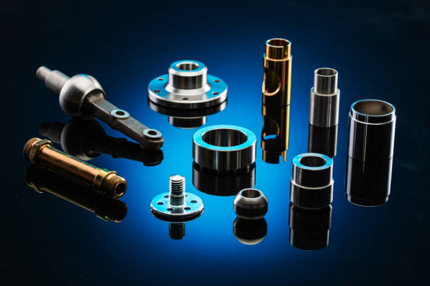
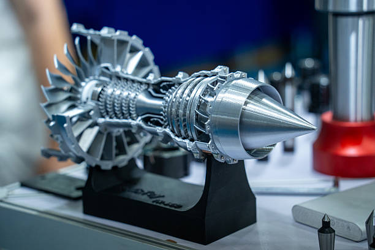
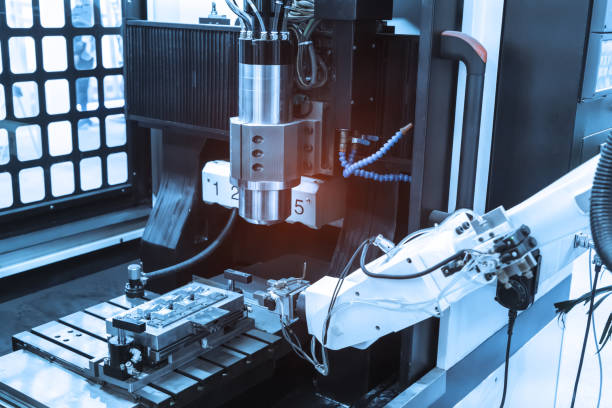
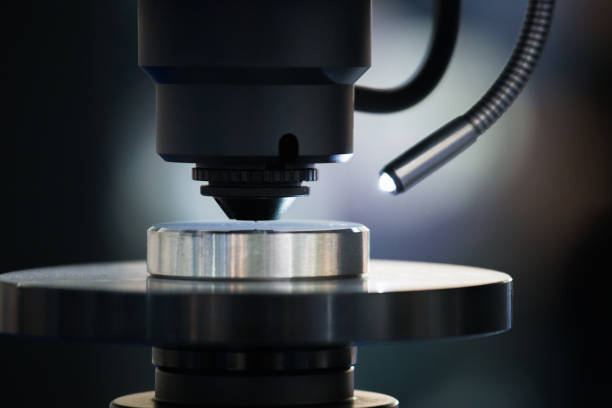
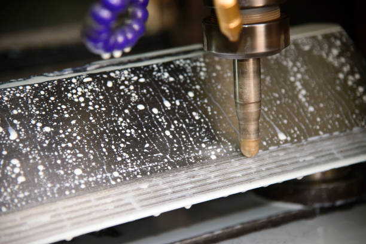

Precision machining.
Built to perform.
High-precision multi-axis CNC machining, custom components, and volume contract manufacturing for demanding industrial, aerospace, and medical applications.
Built around precision engineering.
From one-off rapid prototypes to high-volume recurring production, Forgea connects disciplined engineering with dependable CNC manufacturing.

CNC Milling
5-axis simultaneous and 3-axis milling for complex, close-tolerance components.
Explore Milling →
CNC Turning
Dual-spindle live tooling lathes for multi-featured shafts and concentric parts.
Explore Turning →
Rapid Prototyping
Fast 24h/48h turnaround, DFM feedback, and physical fit validation before production.
Explore Prototyping →
Production Parts
Repeatable contract manufacturing programs designed for batch consistency.
Explore Products →CNC Machine Types & Equipment.
Continuous investment in rigid CNC machine tools, high-speed spindles, and automated CMM inspection infrastructure.

Haas UMC-750 5-Axis Milling Center
Work envelope 762 × 508 × 508 mm with 15,000 RPM inline direct-drive spindle for multi-sided prismatic and sculpted aerospace components.

Mazak Quick Turn 250MSY Turn-Mill
Dual-spindle turning center with Y-axis live rotary milling. Delivers complete front and back machining of complex rotational parts in a single setup.

Sodick Precision Wire EDM
Sub-micron dielectric spark erosion for ultra-hardened tool steels (up to 65 HRC), microscopic spline broaching, and narrow internal keyways.
Hardware & Software Solutions & Industries & Applications.
Mastercam 5-axis programming, digital twin collision simulation, and closed-loop metrology tailored for mission-critical industrial sectors.
💻 CAD/CAM Programming Software
Mastercam 2026, HyperMill, and Siemens NX driving dynamic adaptive roughing, high-speed 5-axis continuous toolpaths, and optimized cycle times.
🛡️ Digital Twin Toolpath Simulation
Vericut virtual machine kinematic simulation of 100% G-code prior to running. Guarantees zero spindle collisions, no gouging, and verified tool clearance.
📡 Closed-Loop In-Process Probing
Renishaw optical touch probes and laser tool setters mounted inside our machining centers for automated part alignment, feature verification, and tool-wear offset compensation.
Critical Industries & Component Applications

Aerospace & Defense
Flight brackets, satellite chassis, turbine impellers, and avionics heat dissipators built to AS9100D standards.
±0.005 mm · AS9102 FAI Certified
Medical & Surgical Devices
Orthopedic trials, robotic surgical wrist joints, titanium bone plates, and fluidic diagnostic manifolds in 316L & Ti-6Al-4V.
Ra 0.2 µm · Bio-Cleaned & Passivated
Robotics & Automation
Harmonic drive housings, high-torque servo frames, pneumatic actuator manifolds, and customized gripper fingers.
Runout: ±0.003 mm · High Rigidity
Energy & Semiconductor
Ultra-clean vacuum flanges, gas distribution showerheads, subsea high-pressure valve bodies, and downhole sensors.
Inconel 718 · PEEK · HastelloyQuality Control & Inspection.
Every single manufactured batch is validated in our climate-stabilized Zeiss CMM metrology room with full material traceability.

Zeiss Spectrum CNC CMM Lab
Sub-micron automated volumetric coordinate measuring machine with Renishaw scanning probes, generating full 3D CAD deviation reports.

Keyence Optical & Surface Profilometry
Instantaneous multi-point optical flash measurement and Mitutoyo diamond-stylus profilometers checking Ra, Rz, and thread pitch tolerances.

AS9102 FAI & Material Certifications
Complete documentation packages including ballooned CAD drawings, AS9102 Rev B FAI reports, Mill Test Reports (MTRs), and Certificates of Conformance.
Standardized alloy specifications & tolerances.
| Material Grade | Standard Tolerance | Precision Option | Common Finishes |
|---|---|---|---|
| Aluminum 6061-T6 / 7075-T6 | ±0.05 mm | ±0.005 mm | Anodized Type II/III, Bead Blast |
| Stainless Steel 304 / 316L / 17-4PH | ±0.05 mm | ±0.004 mm | Passivation, Electropolish, Ra 0.4 |
| Titanium Grade 5 (Ti-6Al-4V) | ±0.08 mm | ±0.005 mm | Media Blasted, Medical Cleaned |
| Engineering Plastics (PEEK, Delrin) | ±0.10 mm | ±0.015 mm | As-Machined, Annealed |
Surface Finishing & Post-Processing.
In-house and certified partner surface processing to meet exacting aesthetic, corrosion, and hardness requirements.
Anodizing (Type II & III)
Type II decorative anodizing in black, clear, or color. Type III Hardcoat (MIL-A-8625) creates an abrasion-resistant ceramic layer with 60 HRC hardness.
Bead & Media Blasting
Precision glass bead or ceramic media blasting that eliminates machining cutter marks to produce a uniform, non-directional satin matte finish.
Chemical Passivation
ASTM A967 citric and nitric acid passivation removing free iron contaminants to restore the chromium-oxide protective passive layer on stainless steel.
Electropolishing
Electrochemical micro-smoothing delivering ultra-clean, mirror-grade sanitary finishes for surgical and semiconductor parts with Ra down to 0.2 µm.